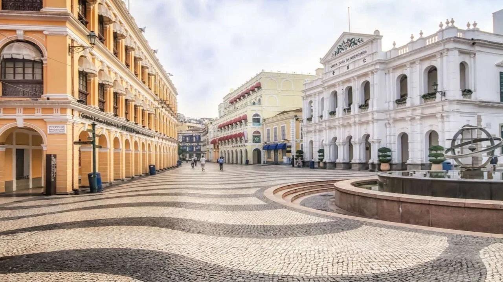
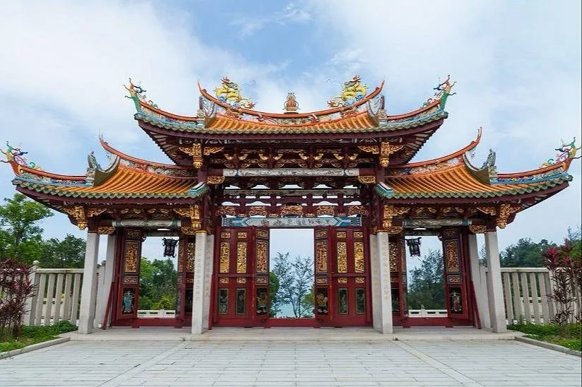
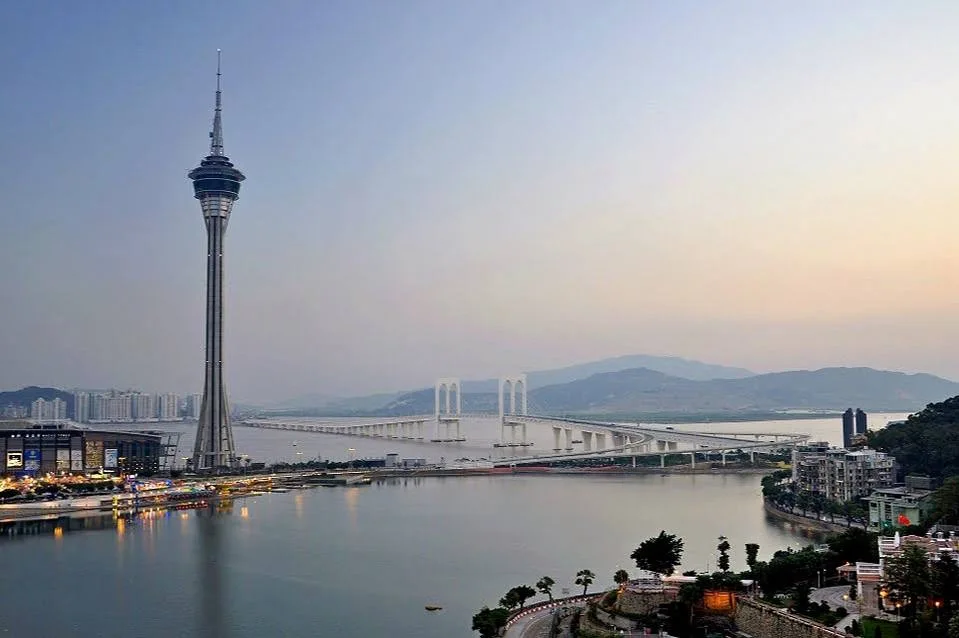

АОМЭНЬ (МАКАО) 澳门
Маршрут по историческому центру Макао — бывшей португальской колонии
1. Руины Собора Святого Павла (Ruins of St. Paul's)
Символ Макао и его визитная карточка. Величественный каменный фасад XVI века — все, что осталось от некогда крупнейшей в Азии иезуитской церкви.
Часы работы: 9:00–18:00
Автобусная остановка: Senado Square или Rua de Mercadores
2. Крепость Форталеза-ду-Монти (Mount Fortress)
Сразу за Руинами Св. Павла расположена старейшая крепость Макао, построенная иезуитами для защиты города. Здесь можно увидеть старинные пушки, отдохнуть на лужайках и посетить Музей Макао с подробной исторической экспозицией.
Часы работы: 7:00–19:00
3. Площадь Сенадо (Senado Square)
Главная общественная площадь, вымощенная волнообразной португальской мозаикой и окруженная зданиями в колониальном стиле. Отсюда начинается сеть пешеходных улочек, ведущих к другим достопримечательностям.

4. Храм А-Ма (A-Ma Temple)
Пройдя от площади по живописной улице Rua da Tercena, можно попасть к старейшему (XV век) и почитаемому храму Макао. Комплекс, посвященный богине мореходов А-Ма (Мацзу), состоит из нескольких павильонов, встроенных в скалу.
Часы работы: 7:00–18:00

5. Башня Макао (Macau Tower)
Со смотровой площадки открываются фантастические виды на полуостров Макао, острова Тайпа и Котай. Подъем занимает всего 40 секунд на скоростном лифте, а наверху можно пройти по коридору со стеклянным полом и совершить прыжок с самой высокой коммерческой платформы банджи-джампинга.
Часы работы: 10:00–20:00
Билет: 208 МОР (≈ 2000 ₽)
Автобусная остановка: Torre de Macau

6. Район Котай или «азиатский Лас-Вегас» (Cotai)
Котай — символ нового, роскошного Макао. Здесь туристов ждут копия Эйфелевой башни, световые шоу и казино-отели, сгруппированные у развлекательной улицы Котай-Стрип.
Как добраться: Бесплатный шаттл от башни Макао до отеля The Parisian.
[Фотография оригинала — восстановление]
Фотографии в OneNote
К оглавлению